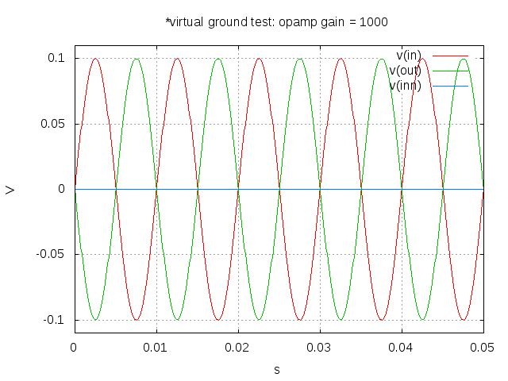

Tiago Oliveira Weber
Interfacing NGSPICE and OCTAVE/MATLAB within Emacs
by Tiago Oliveira Weber
Examples
Octave and Ngspice
Example using fixed values on variables (WORKS)
*Virtual Ground Test: opamp gain = 1000 vin in 0 dc 0V sin(0 0.1 100Hz) r1 in inn $r1 r2 inn out $r2 EOpamp out 0 0 inn 1000 .tran 0.1ms 0.05s .print tran v(in) .meas tran vtest find v(in) at=0.04e-3 .end .control run set gnuplot_terminal=png gnuplot $file v(in) v(out) v(inn) .endc

Example using a single variable result from previous code block (WORKS)
gain=-2; r1=10e3; r2 = -gain*r1; ans = r2;
20000
*Virtual Ground Test: opamp gain = 1000 vin in 0 dc 0V sin(0 0.1 100Hz) r1 in inn $r1 r2 inn out $r2 EOpamp out 0 0 inn 1000 .tran 0.1ms 0.05s .print tran v(in) .meas tran vtest find v(in) at=0.04e-3 .end .control run set gnuplot_terminal=png gnuplot $file v(in) v(out) v(inn) .endc
Example using a vector result from previous code block (WORKS)
gain=-3; r1=10e3; r2 = -gain*r1; ans = [r1 r2];
| 10000 | 30000 |
*Virtual Ground Test: opamp gain = 1000 vin in 0 dc 0V sin(0 0.1 100Hz) r1 in inn $r1[0] r2 inn out $r1[1] EOpamp out 0 0 inn 1000 .tran 0.1ms 0.05s .print tran v(in) .meas tran vtest find v(in) at=0.04e-3c .end .control run set gnuplot_terminal=png gnuplot $file v(in) v(out) v(inn) .endc
*Time Constant Measurement r1 1 0 10k c1 1 0 1p .IC V(1)=1 .tran 1n 0.1u .print tran v(1) .end .control run set gnuplot_terminal=png gnuplot $file v(1) meas tran value_at_tau find V(1) at=1e-8 meas tran value_at_five_tau find V(1) at=5e-8 echo value_at_tau = "$&value_at_tau" > $file.txt echo value_at_five_tau = "$&value_at_five_tau" >> $file.txt .endc
| value_at_tau = 0.36798value_at_five_tau = 0.00671732 |  |
Example using output from ngspice to octave
*Time Constant Measurement r1 1 0 10k c1 1 0 1p .IC V(1)=1 .tran 1n 0.1u .print tran v(1) .end .control run set gnuplot_terminal=png gnuplot $file v(1) meas tran value_at_tau find V(1) at=1e-8 meas tran value_at_five_tau find V(1) at=5e-8 echo "$&value_at_tau,$&value_at_five_tau" > $file.txt .endc
| 0.36798 | 0.00671732 |  |
a = 2 ans = test
0.367980.00671732
Octave only (for test)
Test octave to octave vector (WORKS)
gain=-2; r1=10e3; r2 = -gain*r1; ans = [r1 r2];
| 10000 | 20000 |
vo=vi.*2; ans = vo;
| 20000 | 40000 |
Test octave vector to octave element (WORKS)
vo=vi.*2; ans = vo;